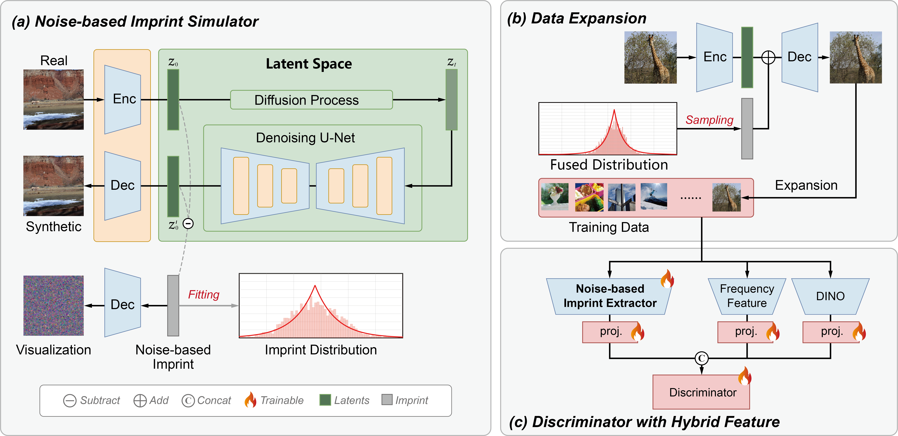

NIRNet: Revealing the Implicit Noise-based Imprint of Generative Models
A Novel and Generalizable Framework for AI-Generated Image Detection
Links
Abstract
With the rapid advancement of vision generation models, the potential security risks stemming from synthetic visual content have garnered increasing attention, posing significant challenges for AI-generated image detection. Existing methods suffer from inadequate generalization capabilities, resulting in unsatisfactory performance on emerging generative models. To address this issue, this paper presents NIRNet (Noise-based Imprint Revealing Network), a novel framework that leverages noise-based imprint for the detection task. Specifically, we propose a novel Noise-based Imprint Simulator to capture intrinsic patterns imprinted in images generated by different models. By aggregating imprint from various generative models, imprint of future models can be extrapolated to expand training data, thereby enhancing generalization and robustness. Furthermore, we design a new pipeline that pioneers the use of noise patterns, derived from a Noise-based Imprint Extractor, alongside other visual features for AI-generated image detection, significantly improving detection performance. Our approach achieves state-of-the-art performance across seven diverse benchmarks, including five public datasets and two newly proposed generalization tests, demonstrating its superior generalization and effectiveness.
Methodology (Overall Framework)
Figure 1: Overall Framework of NIRNet

NIRNet operates in two stages: (a) & (b) The Noise-based Imprint Simulator models imprint and expands the dataset via a fused Laplace distribution. (c) The training stage uses a hybrid discriminator featuring the specialized Noise-based Imprint Extractor.
Experimental Results (Accuracy %)
Table 1: Comparison on GenImage and Synthbuster (Across Known & Unknown Generators)
| Method | GenImage | Synthbuster | |||||||||||||||||
|---|---|---|---|---|---|---|---|---|---|---|---|---|---|---|---|---|---|---|---|
| MJ | SDv1.4 | SDv1.5 | ADM | GLIDE | Wukong | VQDM | BigGAN | Avg. | SDv2 | SDv1.3 | GLIDE | Firefly | DALL·E 3 | DALL·E 2 | MJ | SDv1.4 | SDXL | Avg. | |
| CNNSpot | 54.98 | 86.83 | 86.90 | 48.85 | 48.48 | 86.12 | 52.78 | 49.28 | 64.28 | 58.02 | 66.55 | 34.87 | 44.85 | 44.23 | 40.89 | 40.03 | 67.00 | 43.83 | 48.92 |
| FreDect | 56.33 | 93.56 | 93.43 | 48.46 | 49.07 | 92.20 | 51.18 | 48.01 | 66.53 | 58.00 | 82.40 | 49.85 | 49.50 | 50.90 | 50.60 | 50.95 | 82.75 | 54.15 | 58.79 |
| Fusing | 70.15 | 97.95 | 97.84 | 54.33 | 58.37 | 97.90 | 50.35 | 49.18 | 72.01 | 58.44 | 99.00 | 57.89 | 50.25 | 74.28 | 52.10 | 59.24 | 99.15 | 61.53 | 67.99 |
| LGrad | 65.88 | 99.62 | 99.38 | 52.63 | 52.24 | 97.98 | 52.68 | 49.80 | 71.27 | 59.79 | 98.05 | 54.04 | 50.80 | 60.64 | 51.29 | 54.69 | 97.60 | 61.04 | 65.33 |
| UnivFD | 62.13 | 99.74 | 99.65 | 50.38 | 56.47 | 98.52 | 92.83 | 50.02 | 76.22 | 56.20 | 99.70 | 62.15 | 50.65 | 54.90 | 52.70 | 58.30 | 99.45 | 62.55 | 66.29 |
| AIDE | 83.08 | 99.88 | 99.83 | 73.33 | 94.17 | 99.84 | 93.08 | 52.24 | 86.93 | 64.70 | 92.90 | 78.60 | 41.15 | 55.95 | 47.20 | 76.05 | 93.90 | 62.10 | 68.06 |
| SAFE | 95.27 | 99.41 | 99.27 | 82.05 | 96.29 | 98.20 | 96.29 | 97.84 | 95.58 | 82.15 | 96.55 | 79.35 | 51.40 | 78.05 | 81.10 | 79.85 | 97.25 | 82.60 | 80.92 |
| NIRNet (Ours) | 98.18 | 99.84 | 99.85 | 99.48 | 99.77 | 99.78 | 99.75 | 94.83 | 98.94 | 84.30 | 98.85 | 91.25 | 75.19 | 84.80 | 86.85 | 91.45 | 99.48 | 91.85 | 89.34 |
Table 2: Comparison on In-the-Wild Datasets (Chameleon, SynthWildx, WildRF)
| Method | Chameleon | SynthWildx (Avg.) | WildRF (Avg.) |
|---|---|---|---|
| Fusing | 68.97 | 60.68 | 63.03 |
| LGrad | 65.82 | 58.61 | 62.30 |
| AIDE | 62.99 | 58.21 | 59.03 |
| SAFE | 59.13 | 49.76 | 59.04 |
| NIRNet (Ours) | 81.88 | 86.54 | 85.19 |
Table 3: Comparison on Novel Architectures (Gen-8K & ForenGen)
| Method | Gen-8K (Avg.) | ForenGen (TPR) |
|---|---|---|
| AIDE | 59.83 | 35.54 |
| DRCT | 63.40 | 69.20 |
| SAFE | 51.45 | 39.05 |
| NIRNet (Ours) | 94.04 | 84.22 |
Figure 2: Robustness Analysis to Perturbations

Accuracy comparison under varying levels of JPEG compression and Gaussian blur. NIRNet consistently demonstrates superior resilience to common post-processing effects compared to prior art.